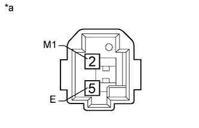

КОНТРОЛЬНАЯ ЛАМПА БЕЗОПАСНОСТИ В СБОРЕ > ПРОВЕРКА |
| 1. ПРОВЕРЬТЕ КОНТРОЛЬНУЮ ЛАМПУ В СБОРЕ |
|  |
Подайте напряжение аккумуляторной батареи на контакты контрольной лампы безопасности и проверьте, горит ли контрольная лампа безопасности.
| Условия измерений | Заданные условия |
| Положительный вывод аккумуляторной батареи (+) → контакт 2 (LP) Отрицательный (-) вывод аккумуляторной батареи → контакт 5(E) | Контрольная лампа безопасности горит |